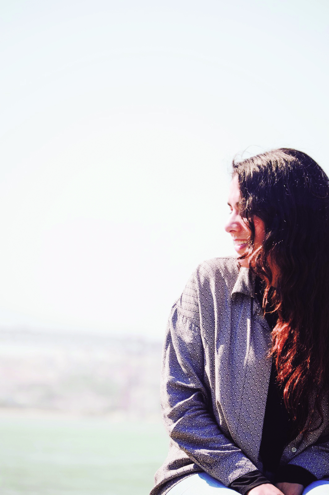
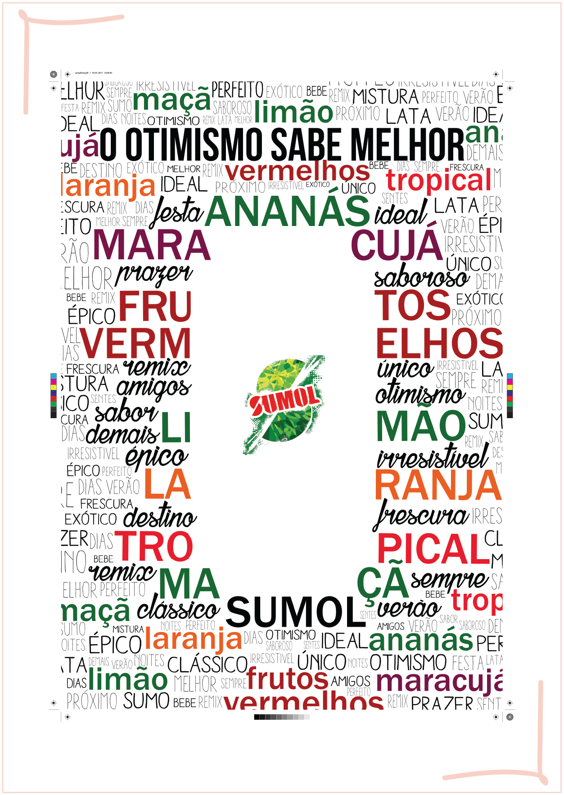
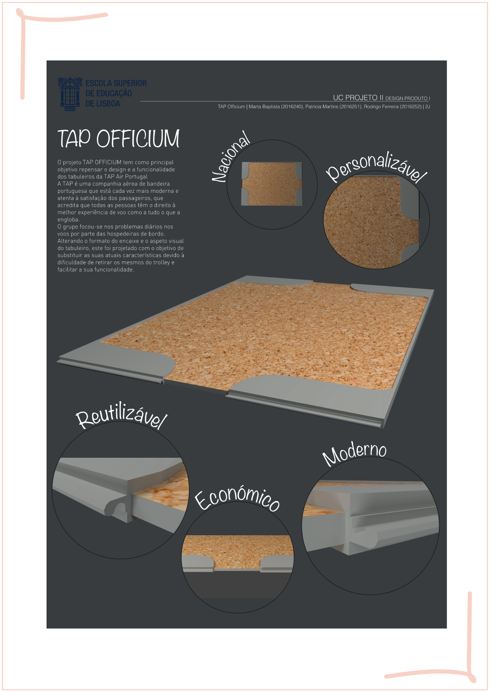
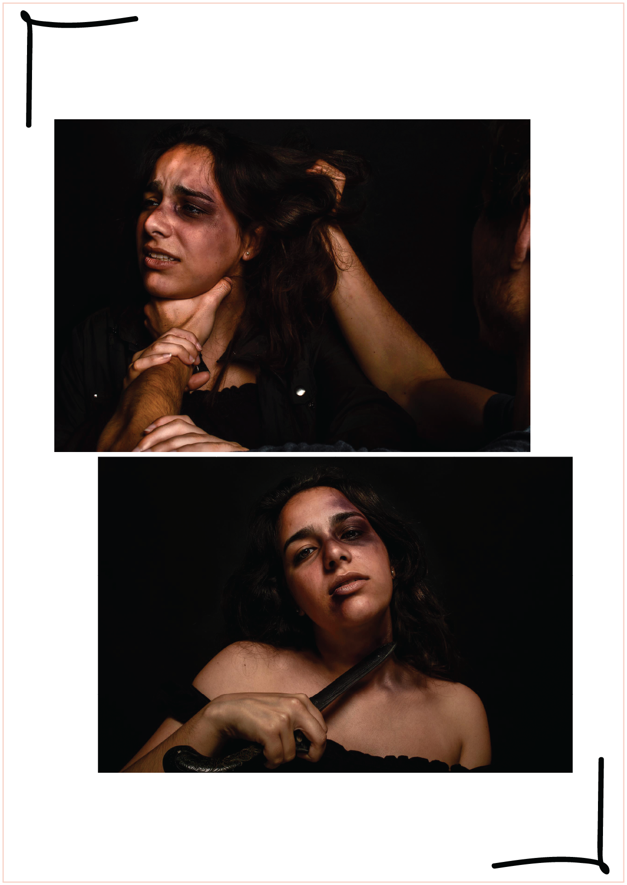
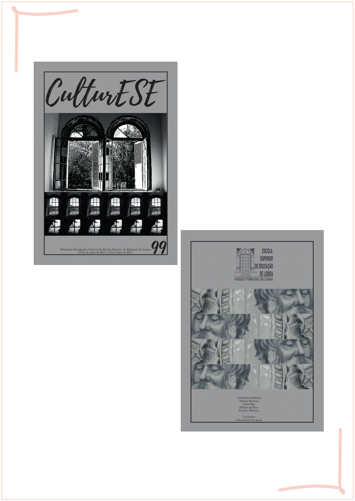
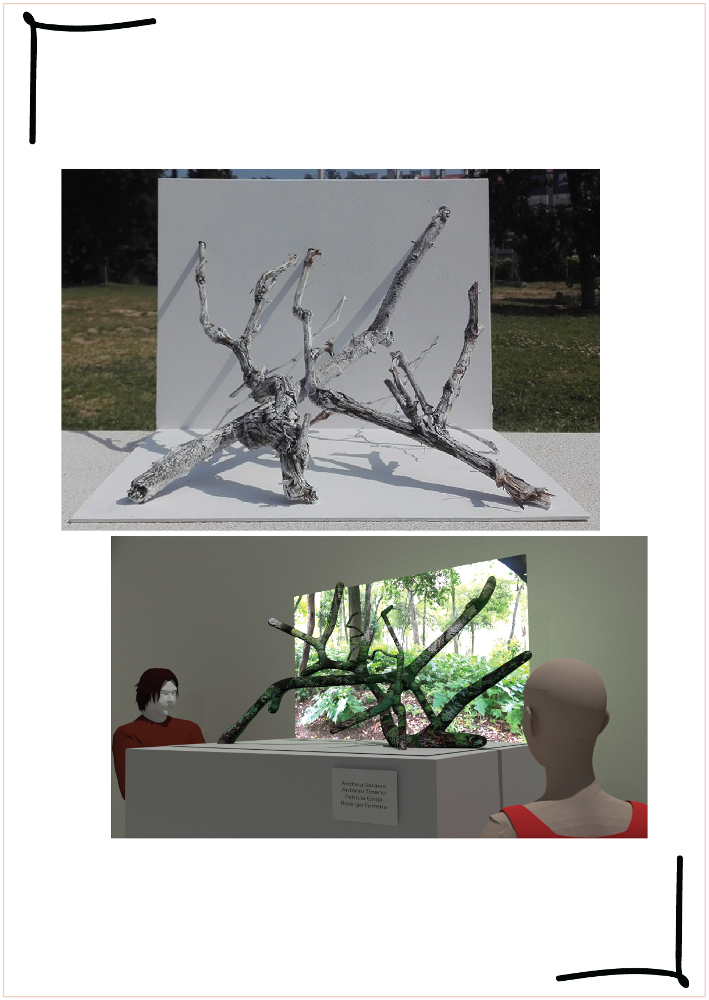
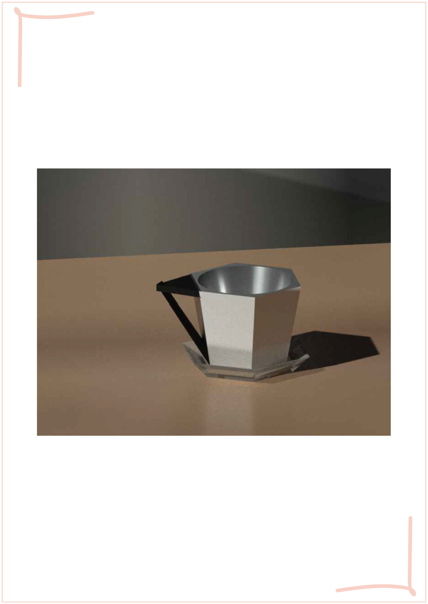
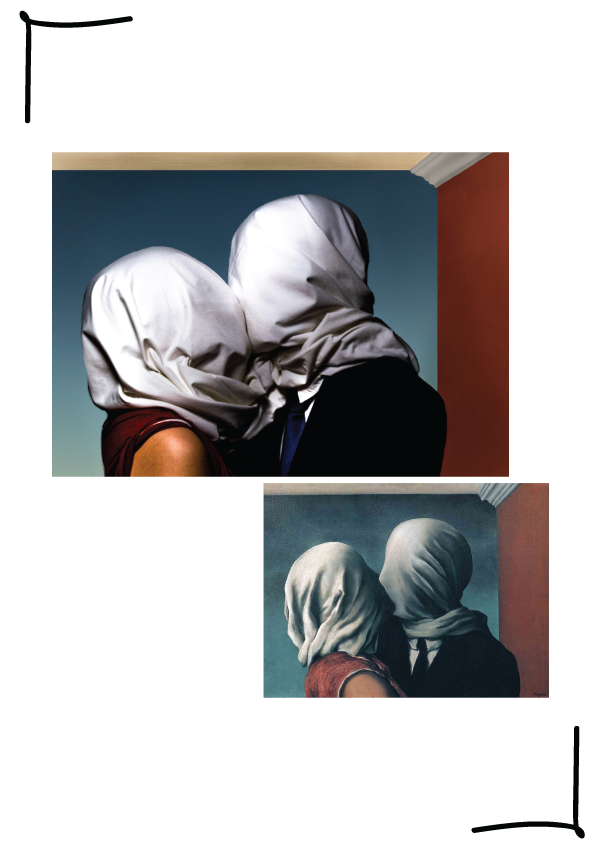

9 Novembro, 2018
Olá! Chamo-me Patrícia e tenho 20 anos. Sou uma estudante universitária e gosto imenso de desenhar, pintar e tirar fotografias. Ainda, adoro passar tempo com os meus amigos e com a minha família.
Estou no meu último ano de licenciatura e prentendo, no próximo ano, realizar um Mestrado de Design de Comunicação ou Design Gráfico. Espero que goste do meu Porfólio!


Trabalho desenvolvido no 1ºano da Licenciatura para a UC Projeto I - Design Gráfico. O objetivo do projeto era fazer um cartaz publicitário, utilizando apenas diferentes tipografias e o logótipo da marca.

Trabalho desenvolvido no 1ºano da Licenciatura para a UC Projeto I - Metodologias. O objetivo do projeto era criar dois logótipos, sendo um para uma Oficina familiar e outro para um cabeleireiro feminino.

Trabalho desenvolvido no 2ºano da Licenciatura para a UC Projeto II - Design de Produto. O objetivo do projeto era inovar o trolley dos aviões da companhia TAP.

Trabalho desenvolvido no 1ºano da Licenciatura para a UC Comuniacação por Imagem. O objetivo do projeto era representar a violência doméstica e depressão.

Trabalho desenvolvido no 1ºano da Licenciatura para a UC Projeto I - Design Gráfico. O objetivo do projeto era fazer uma nova versão da Revista CulturEse, a revista da Escola Superior de Educação de Lisboa, falando sobre a mesma e seus eventos.

Trabalho desenvolvido no 2ºano da Licenciatura para a UC Oficina de Artes e Tecnologias II - Escultura e Representação Digital. O objetivo do projeto era fazer uma peça escultórica sobre o Simulacro e ainda, representar a sua instalação no programa Blender.

Trabalho desenvolvido no 1ºano da Licenciatura para a UC Oficina de Artes e Tecnologias I - AutoCad. O objetivo do projeto era aprender a utilizar o programa AutoCad, realizando uma caneca.

Trabalho desenvolvido no 1ºano da Licenciatura para a UC Comunicação por Imagem. O objetivo do projeto era fazer uma peça escultórica sobre o Simulacro e ainda, representar a sua instalação no programa Blender.